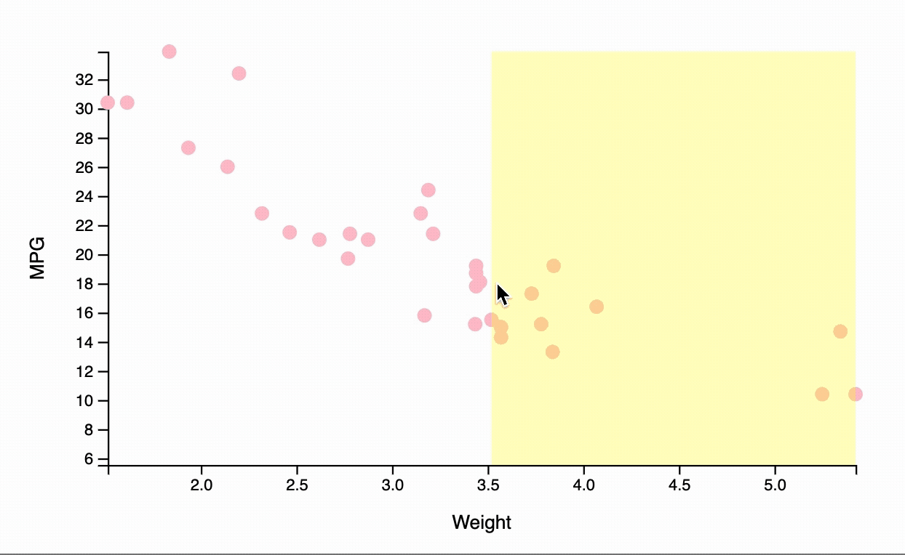
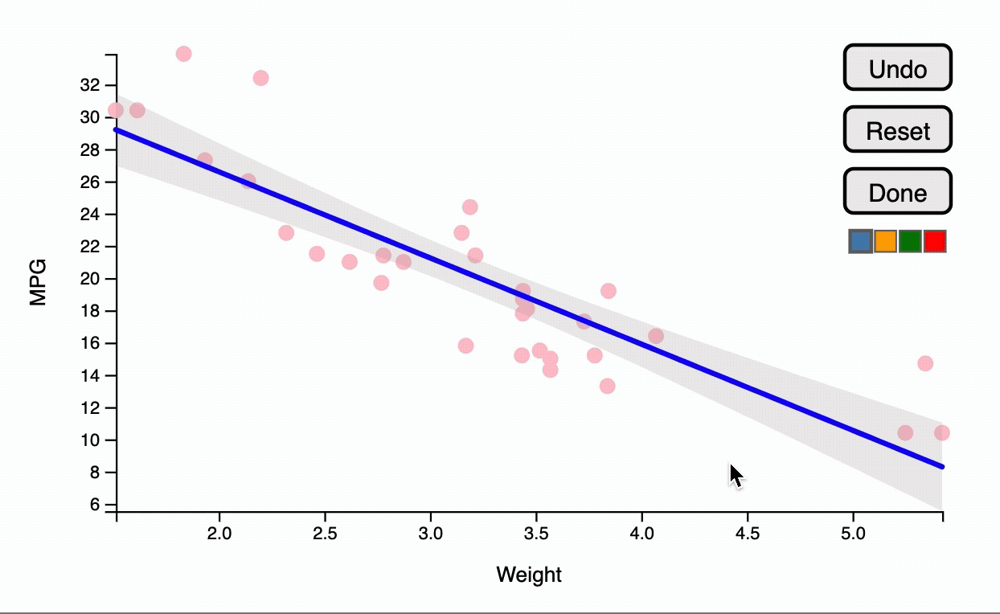

Overview
‘You Draw It’ is a feature that allows users to interact with a chart directly by drawing a line on their computer screen with a mouse. Originally introduced by the New York Times in 2015 for the purpose of interactive reading, this package adapts the use of the ‘You Draw It’ method as a tool for interactive testing of graphics.
Installation
You can install the development version of youdrawitR from GitHub with:
#install.packages("pak")
pak::pak("Alisa-Krasilnikov/youdrawitR")Usage
Both functions can be used with geom_point, geom_smooth, and geom_line. Note that drawit() can only be used with two geoms at a time, while sketchit() supports multiple layers without restrictions.
drawit: Guided Drawing
drawit() allows users to draw a single continuous line across the plot, enforcing a one-to-one mapping between x-values and user-drawn y-values. This is particularly useful for assessing how users estimate regression lines or expected trends.
The drawing region can be customized, and the underlying data or model can optionally be revealed after the user completes their drawing.
library(ggplot2)
library(youdrawitR)
p <- ggplot(mtcars, aes(x = wt, y = mpg)) +
geom_point(size = 1.5, colour = "pink") +
geom_smooth(method = "lm") +
labs(x = "Weight", y = "MPG")
drawit(p,
show_on_finish = TRUE,
draw_start = 3.5)
sketchit: Freeform Drawing
sketchit() enables more flexible interaction, allowing users to draw multiple lines without a one-to-one constraint between x and y values. This makes it suitable for more exploratory or open-ended tasks.
Users can control the number of lines drawn (minimum and maximum), and customize visual properties such as color. See the documentation for available options.
library(ggplot2)
library(youdrawitR)
p <- ggplot(mtcars, aes(x = wt, y = mpg)) +
geom_point(size = 1.5, colour = "pink") +
geom_smooth(method = "lm") +
labs(x = "Weight", y = "MPG")
sketchit(p,
max_lines = 10,
min_lines = 2)
Shiny Integration
Both drawit() and sketchit() can be used within Shiny applications to capture user input for further analysis.
drawit()returns user-drawn y-values aligned to the original x-values in theggplot2dataset, preserving the source data structure as closely as possible while permitting minor smoothing.sketchit()returns detailed drawing data, including x and y coordinates of each line segment, along with attributes such as color and drawing order.
These outputs can be accessed via Shiny inputs and used for downstream tasks, such as comparing user predictions to model results or analyzing interaction behavior.
⭐ This page is a minimal description of the package and its usability. We highly recommend looking at the Articles section, as the vignettes will have examples that go more in depth. ⭐